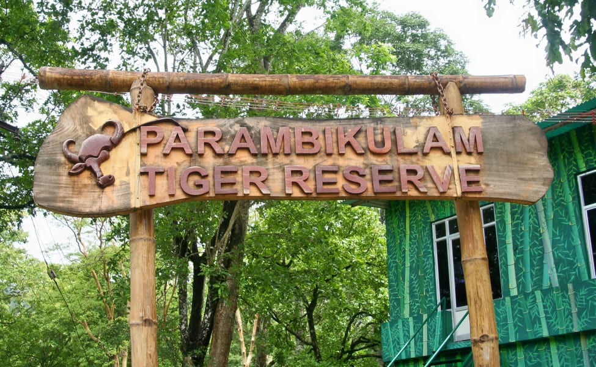

Parambikulam Wildlife Sanctuary
The Parambikulam Wildlife Sanctuary, 47 kilometers from Palakkad is an
excellent place to get a good sight of elephants, gaurs, chitals,
sambhars, deer, Nilgiri langurs, wild dogs, leopards and not to forget,
tigers. The park occupies an area of 277 sq km between Anamalai hills
and Nellliyampathy at a height of 980 - 4600 feet.

Nellliyampathy
54 kilometers south of Palakkad is Nellliyampathy, a hill station
perched at a height of 4600 feet above sea level. The small town is
perfect to soak in the magical beauty of hills, coffee, tea and orange
plantations. On the way you can stop by the Pothundy Dam and relish in
the beauty of the dam or go on a boating ride.